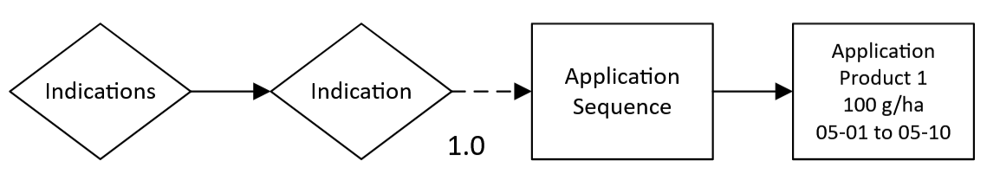

Simple scenario
This scenario represents the most basic use case of xCropProtection: one application of a product that occurs every year.
<?xml version="1.0" encoding="UTF-8"?>
<PPMCalendar xmlns="urn:xCropProtectionLandscapeScenarioParametrization">
<TemporalValidity scales="time/simulation"> always </TemporalValidity>
<TargetCrops type="list[int]" scales="global"> 10 </TargetCrops>
<Indications>
<Indication type="xCropProtection.ChoiceDistribution" scales="time/year, space/base_geometry">
<ApplicationSequence probability="1">
<Application>
<Tank>
<Products type="list[str]" scales="other/products">
Product 1
</Products>
<ApplicationRates scales="other/products">
<ApplicationRate type="float" unit="g/ha" scales="global">
100
</ApplicationRate>
</ApplicationRates>
</Tank>
<ApplicationWindow type="xCropProtection.MonthDaySpan" scales="global">
05-01 to 05-10
</ApplicationWindow>
<Technology scales="global">Technology</Technology>
<InCropBuffer type="float" unit="m" scales="global">0</InCropBuffer>
<InFieldMargin type="float" unit="m" scales="global">0</InFieldMargin>
<MinimumAppliedArea type="float" unit="m²" scales="global">0</MinimumAppliedArea>
</Application>
</ApplicationSequence>
</Indication>
</Indications>
</PPMCalendar>
Scenario explanation
Product 1 is applied every year for the whole duration of the simulation:
Product 1 is applied on fields with LULC type 10:
The product applied has the name Product 1:
Product 1 has an application rate of 100 g/ha:
The application occurs between the days of May 1st and May 10th (inclusive) with each day being equally likely:
<ApplicationWindow type="xCropProtection.MonthDaySpan" scales="global">
05-01 to 05-10
</ApplicationWindow>
The application uses the Technology with the name "Technology":
There are no in field margins or in-crop buffers:
<InCropBuffer type="float" unit="m" scales="global">0</InCropBuffer>
<InFieldMargin type="float" unit="m" scales="global">0</InFieldMargin>
An application will occur as long as the field's area is greater than or equal to 0 m²:
Flow chart
